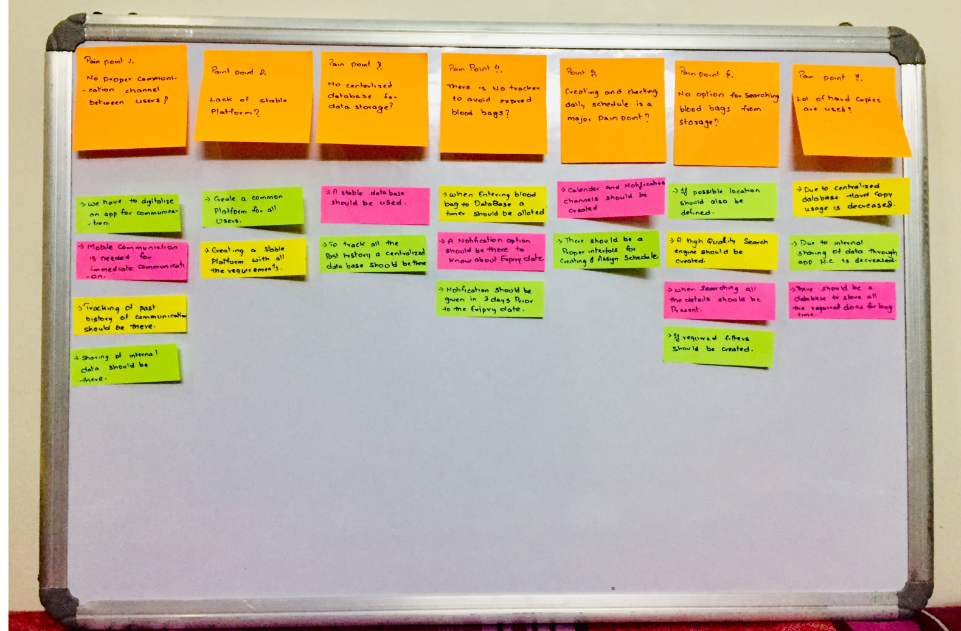
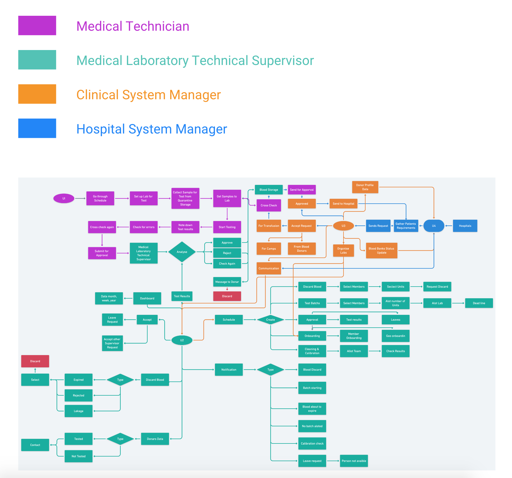
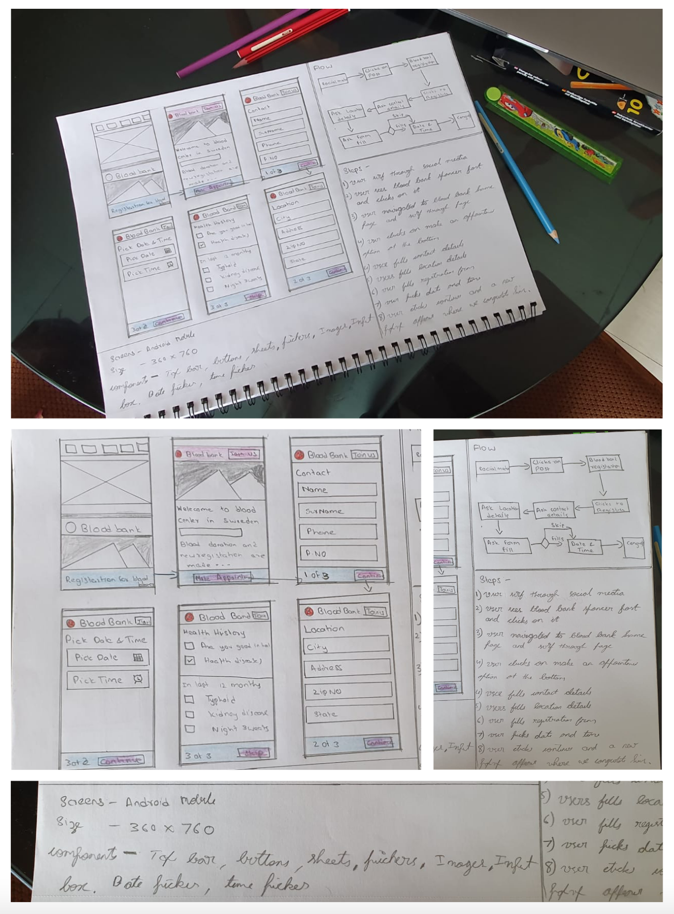

So, now as the problem or the opportunity is clearly framed, I searched for methods to handle it. I tried to spur as many ideas as possible. During this phase, I didn’t ignore ideas that seem obvious or easy. Any idea can sprout a brilliant concept. So, I made sure to look into each and every idea with a fresh mindset. To finalize this stage, I shortlisted the best and leave the rest.
Brainstorming is a combination of informal problem solving and lateral thinking. The technique intends for participants to come up with eccentric ideas. Some of these thoughts and ideas are crafted into original and creative solutions to problems, whereas help to spark additional ideas. In this session me and my partner had spent time to come with some ideas to the problems.
I come up with concepts to solve the problem for the initial phase. I tested our idea with Shasidar from NTR Blood Bank to know the sustainability and viability of the notions. So below you will be able to find high level solutions I came up with to solve existing pain points
Pain Point 1: No proper communication channel between users.
Solution: Creating a common platform application for all the blood banks and hospitals all over
the country with centralised database and good user experience.
Pain Point 2: Lack of stable platform.
Solution: Firstly we have to digitalise and create an app for communication. Mobile communication
Is also needed for immediate notifications. Sharing of internal data and tracking of past history
In communication is also there
Pain Point 3: No centralised database for data storage
Solution: To store all the communication history and all the details of blood banks, patients
and Hospitals a common centralised database is created.
Pain Point 4: There is no tracker to avoid expired blood bags.
Solution: To solve this problem when blood bag is entered into the database a timer is allotted. A
notification is given at entrain intervals to know about the expiry dates.
Pain Point 5: Creating and checking daily schedule is a major pain point.
Solution: A proper interface is created for creating and assigning schedules. Calendar and
notification channels will be created for checking daily schedule and events .
Pain Point 6: No option for searching blood bags from storage.
Solution: A high quality search engine is created with filers to know about the complete
details and location of the blood bag. This will be useful while delivering the blood
bag for transfusion.
Pain Point 7: Lot of hard copies are used.
Solution: Due to stable application and internal communications with a good centralised database
the usage of hard copies is reduced.
After sessions of ideation and brainstorming interviews with blood banks pears, i am good to go with the solutions i have ideated and now its time to created potential system flow with individual user in system.
My potential System flows are visual representations of the path the user can follow to achieve a goal while using an app, website of our product. Creating a representation like this, helped me to reflect on the flow and communicate it to get feedback. I also tried to compare current system flow with potential system flow to evaluate and test them. I designed the user flows, for the audience to understand the story behind the designs and to get constructive feedback from them. Below you will be able to find entire system divide into 4 colour. each colour flow represents each user and his flow in the system.
Since entire system flow is created i started designing and sketching low fidelity wireframes to create a road map for visual design.
Wireframing is a necessary part of the design process. Acting like blueprints for web and mobile apps, they help you set a foundation for your product and discover early on what works and what doesn’t. Below you will be able to find few rough sketches of my to define the screens and its requirements.
I want to go for rapid prototyping, but testing on users is not possible right now as they are busy. so i have done some rough sketching following user mental model to sync it with system model